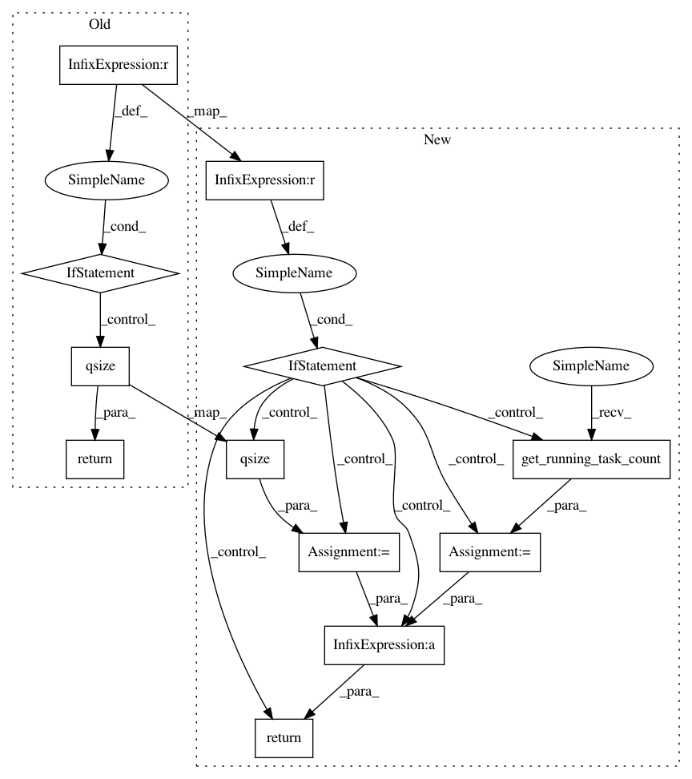

9a4b8475eb6665b63d77b50e98362e2690522155,w3af/core/controllers/core_helpers/status.py,CoreStatus,get_grep_qsize,#CoreStatus#,282
Before Change
def get_grep_qsize(self):
gc = self._w3af_core.strategy.get_grep_consumer()
return 0 if gc is None else gc.in_queue.qsize()
def get_grep_eta(self):
adjustment = self.get_grep_adjustment_ratio()
After Change
def get_grep_qsize(self):
gc = self._w3af_core.strategy.get_grep_consumer()
if gc is None:
return 0
running_tasks = gc.get_running_task_count()
queued_tasks = gc.in_queue.qsize()
return running_tasks + queued_tasks
def has_finished_grep(self):
gc = self._w3af_core.strategy.get_grep_consumer()
In pattern: SUPERPATTERN
Frequency: 3
Non-data size: 12
Instances
Project Name: andresriancho/w3af
Commit Name: 9a4b8475eb6665b63d77b50e98362e2690522155
Time: 2018-08-29
Author: andres.riancho@gmail.com
File Name: w3af/core/controllers/core_helpers/status.py
Class Name: CoreStatus
Method Name: get_grep_qsize
Project Name: andresriancho/w3af
Commit Name: 9a4b8475eb6665b63d77b50e98362e2690522155
Time: 2018-08-29
Author: andres.riancho@gmail.com
File Name: w3af/core/controllers/core_helpers/status.py
Class Name: CoreStatus
Method Name: get_crawl_qsize
Project Name: andresriancho/w3af
Commit Name: 9a4b8475eb6665b63d77b50e98362e2690522155
Time: 2018-08-29
Author: andres.riancho@gmail.com
File Name: w3af/core/controllers/core_helpers/status.py
Class Name: CoreStatus
Method Name: get_audit_qsize